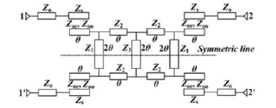

Academic Projects
Overview
This seminar explored congestion control mechanisms in communication networks, analyzing how bandwidth, delay, packet loss, and fairness shape real-world data flow. The project reviewed both classical TCP algorithms and state-of-the-art learning-based congestion control systems.
- Understanding TCP behaviorsstrong>: slow start, congestion avoidance, probing, recovery.
- Modeling network performance through throughput, latency variation, fairness, and stability.
- Comparing rule-based and learning-based approaches to congestion decision-making.
Methods & Key Learning
- **ML-based methodsstrong>** such as PCC, Verus, Remy, and PCC-Vivace: optimized for throughput–delay trade-offs using online performance monitoring.
- **Reinforcement Learning (RL) approachesstrong>** including Aurora, TCP-Drinc, and QTCP, formulated congestion control as a sequential decision problem with:
Overview
Designed and analyzed two high-selectivity wideband balanced bandpass filtersstrong> (BPFs) using symmetric multiple-mode resonatorsstrong> (MMRs). The work focuses on achieving:
- Wide differential-mode passband
- Excellent out-of-band rejection
- Strong common-mode suppression
- Compact microstrip structure for high-frequency wireless systems
Tools & Skills Demonstrated
Tools: HFSSstrong> (full-wave EM), circuit-level S-parameter modelingstrong>.
Demonstrates strengths in RF/microwave filter design, EM simulation, differential signaling, and hardware measurement & validation.
